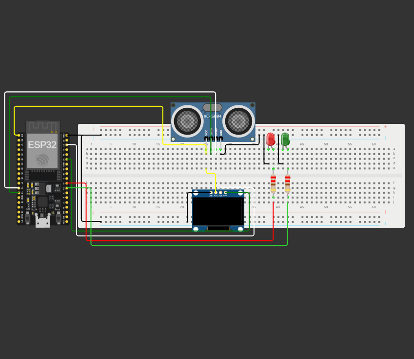

IoT - Monitoramento Inteligente
4º Semestre - Projeto Interdisciplinar
I. Descrição e Tecnologias
Nosso desafio central foi estruturar um ecossistema completo de Internet das Coisas, capaz de ler grandezas do mundo físico através de dispositivos embutidos e transmitir essas métricas para um ambiente digital para análise e tomada de decisão.
- Hardware e Sensores: Integração de microcontroladores para a captação contínuta de dados do ambiente.
- Comunicação: Configuração de protocolos de rede (como MQTT/HTTP) para o tráfego seguro das informações.
- Software e Dados: Estruturação de um sistema back-end para persistência dos dados e uma interface (dashboard) para o monitoramento em tempo real.
II. Minha Participação
Neste trabalho, atuei na lógica de integração e fluxo da informação. Minha responsabilidade incluiu garantir que os dados emitidos pelos sensores fossem corretamente recebidos, formatados e persistidos no banco de dados. Colaborei para assegurar a consistência e a integridade da arquitetura, transformando "dados brutos" do hardware em métricas visuais e compreensíveis para o usuário final na interface do sistema.
III. Código-Fonte
A arquitetura do software, os scripts e os códigos-fonte produzidos pela equipe estão documentados no GitHub:
Ver no GitHubIV. Screenshots
